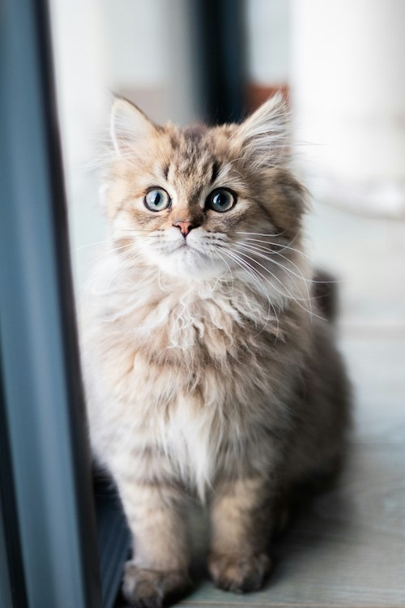

I prefer cats because they are easier to maintain. Here are some reasons why. Potty training, you dont have to potty train them because they automatically know how and where the restroom is. Cats are also for the most part quiet, they mainly meow is they need something. Cats also very rarely need actual baths, I say this because they can clean themselves.
